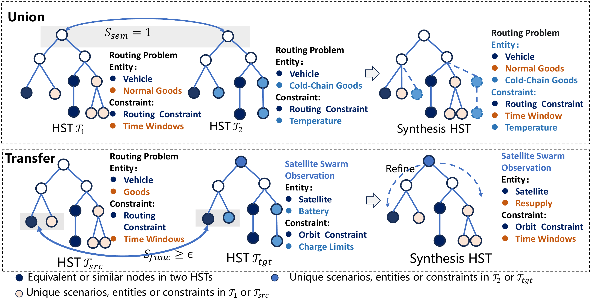

Opt-Miner: Empowering Information-Seeking Agent with Tree-Guided Data Synthesis for Optimization Modeling
Opt-Miner trains information-seeking agents through tree-guided data synthesis and retrieval-aware reinforcement learning, improving automated optimization modeling for knowledge-intensive problems.

Tree-guided data synthesis in Opt-Miner. Subtree union combines compatible entities and constraints within a domain (top). Scenario transfer uses functional compatibility between entities to adapt mathematical structures across domains (bottom).
01 / Research question
Complex industrial optimization problems often require specialized domain knowledge, technical standards, and mathematical modeling techniques that cannot all be encoded in a language model's parameters. Existing training datasets are largely self-contained, giving agents little incentive to retrieve external information. Moreover, rewards based only on final modeling accuracy cannot distinguish useful retrieval from unnecessary exploration. This work investigates how to synthesize problems with deliberate knowledge gaps and train agents to identify what information is missing, seek relevant technical evidence, and incorporate it into mathematical formulations.
02 / Approach
Opt-Miner first represents existing optimization problems as hierarchical scenario trees containing contextual information, entities, constraints, and the mathematical techniques required for formulation. Subtree union combines compatible problems, while cross-domain transfer adapts mathematical structures to new scenarios. A knowledge-fogging operation replaces explicit explanations with professional terminology, creating training problems that require external information. The synthesis process also preserves reference solutions and retrieval evidence. The agent is then trained using Retrieval-based Group Relative Policy Optimization (R-GRPO), which combines solver-based modeling accuracy with a reward for matching relevant retrieval keywords. At inference time, the agent can iteratively search arXiv, read and summarize technical documents, execute Python code, and incorporate retrieved knowledge into its final optimization formulation and solver implementation.
03 / Research scope
Evaluation spans seven optimization modeling benchmarks, including the newly constructed 128-problem Opt-Miner-Bench, covering linear, integer, mixed-integer, and selected nonlinear optimization problems. Experiments use Qwen3-4B-Instruct and Qwen3-8B, with up to three research turns per problem retrieving papers from arXiv. Accuracy is measured by matching optimal objective values computed using Gurobi against reference results.
Experimental results
Benchmark performance
| Method | NL4Opt | MAMO EasyLP | MAMO ComplexLP | IndustryOR | ReSocratic | OptMATH | Opt-Miner-Bench |
|---|---|---|---|---|---|---|---|
| Qwen3-4B-Instruct | 74.1 | 65.3 | 15.2 | 19.0 | 40.8 | 22.9 | 5.5 |
| Opt-Miner · Qwen3-4B-Instruct | 96.2 | 92.5 | 66.4 | 41.0 | 60.6 | 35.5 | 21.1 |
| Qwen3-8B | 77.5 | 74.6 | 21.3 | 24.0 | 43.7 | 16.2 | 13.3 |
| Opt-Miner · Qwen3-8B | 97.0 | 94.8 | 76.5 | 44.0 | 66.5 | 45.8 | 30.5 |
Comparison with the corresponding base models from Table 1. Opt-Miner combines agent training with access to the web research module. Accuracy is based on optimal objective-value agreement.
Opt-Miner improves performance at both model sizes, with particularly strong gains on complex modeling tasks. The pattern suggests that learning to recognize knowledge gaps and obtain relevant evidence offers a useful way to address specialized modeling demands alongside increasing model capacity.
Training-data ablations
| Method | NL4Opt | MAMO EasyLP | MAMO ComplexLP | IndustryOR | ReSocratic | OptMATH | Opt-Miner-Bench |
|---|---|---|---|---|---|---|---|
| OptMATH · 1k | 88.9 | 86.6 | 52.1 | 28.0 | 54.4 | 27.1 | 7.0 |
| OptMATH · 2k | 89.6 | 90.1 | 54.5 | 32.0 | 56.7 | 28.3 | 11.7 |
| OptMATH 1k + Union 1k | 92.3 | 90.4 | 59.2 | 39.0 | 56.9 | 34.3 | 17.2 |
| OptMATH 1k + Transfer 1k | 93.7 | 91.3 | 62.6 | 36.0 | 58.9 | 33.7 | 18.0 |
| Opt-Miner without knowledge fogging | 89.9 | 90.0 | 56.3 | 34.0 | 58.5 | 30.7 | 14.8 |
| Opt-Miner (Full) | 96.2 | 92.5 | 66.4 | 41.0 | 60.6 | 35.5 | 21.1 |
The full 2k training set contains 1k OptMATH examples, 0.5k Union examples, and 0.5k Transfer examples. The fogging ablation uses this mixture without knowledge fogging.
At the same data scale, structured synthesis is more effective than simply adding conventional examples. Union and transfer broaden the combinations of scenarios and constraints, while knowledge fogging changes what the agent must do: recover relevant knowledge instead of receiving every rule in the problem statement. Both structural diversity and incomplete information help shape information-seeking behavior.
Retrieval rewards and tool access
| Method | NL4Opt | MAMO EasyLP | MAMO ComplexLP | IndustryOR | ReSocratic | OptMATH | Opt-Miner-Bench |
|---|---|---|---|---|---|---|---|
| GRPO instead of R-GRPO | 90.3 | 88.7 | 57.3 | 35.0 | 54.0 | 29.5 | 16.4 |
| Without web research | 93.8 | 91.9 | 57.8 | 35.0 | 55.7 | 28.3 | 12.5 |
| Opt-Miner (R-GRPO + web research) | 96.2 | 92.5 | 66.4 | 41.0 | 60.6 | 35.5 | 21.1 |
These are separate ablations from Tables 3–4. GRPO removes the retrieval-matching reward during training; the other ablation removes the web research module. The retrieval reward uses keyword F1 against reference retrieval evidence.
Training retrieval behavior and providing a retrieval tool address connected needs: deciding what to seek and obtaining the missing information. Both ablations cause larger losses on challenging tasks, suggesting that tool access and the information-seeking policy should be designed together to turn external knowledge into modeling gains.
Citation
@inproceedings{optminer2026,
title = {Opt-Miner: Empowering Information-Seeking Agent with Tree-Guided Data Synthesis for Optimization Modeling},
author = {Haoyang Liu and Yuyang Cai and Jie Wang and Xiongwei Han and Minyang Hu and Shuqi Liu and Mingxuan Yuan and Jianye Hao and Feng Wu},
booktitle = {ICML},
year = {2026},
url = {https://proceedings.mlr.press/v306/liu26d.html}
}